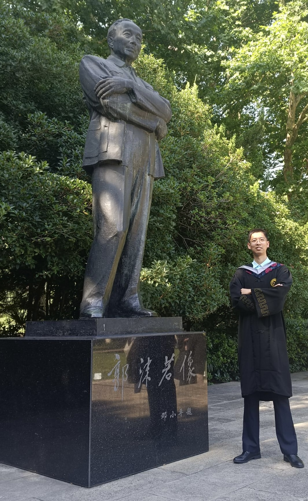
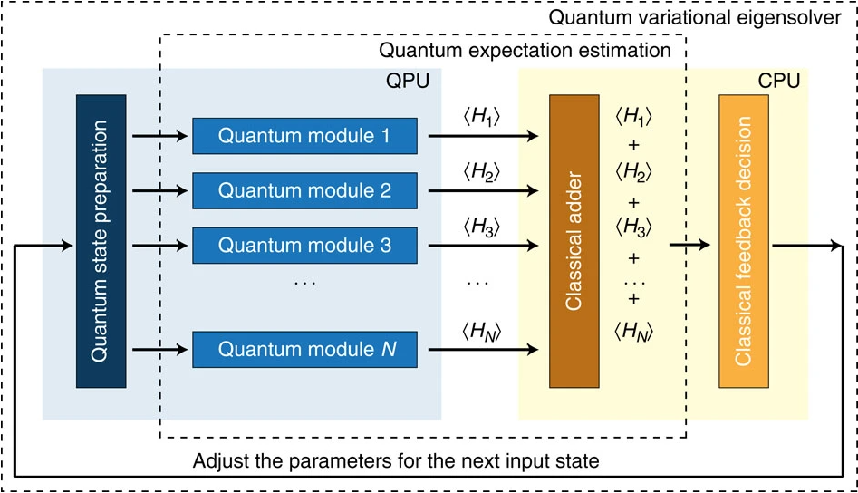
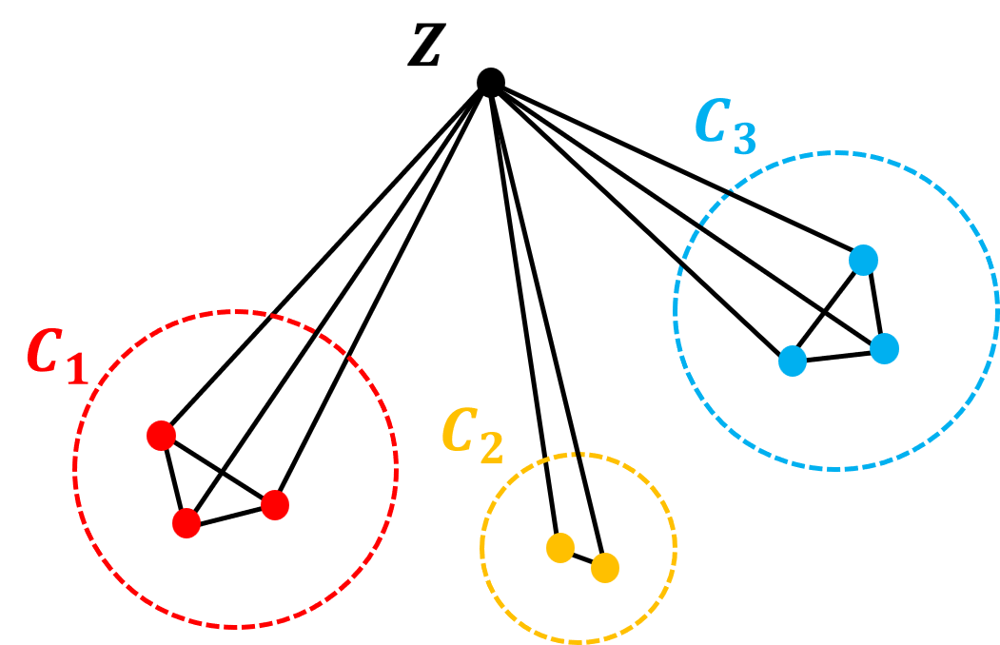
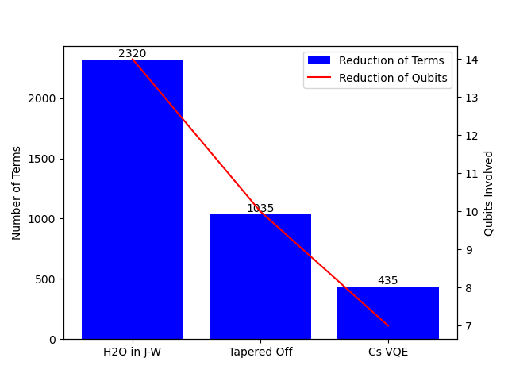
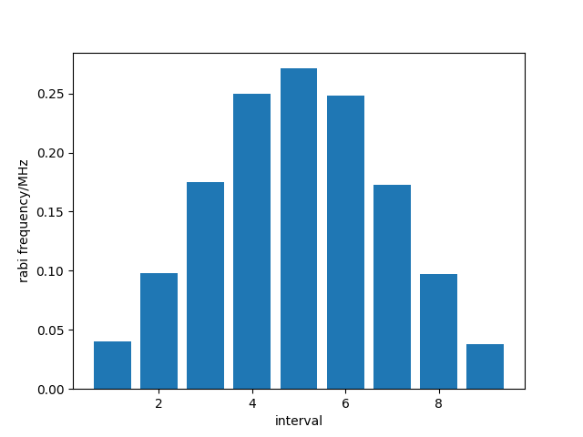
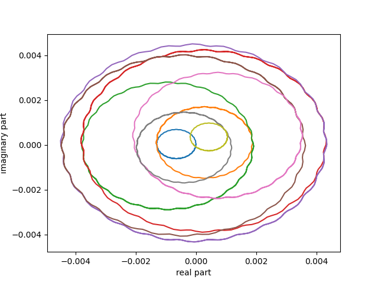
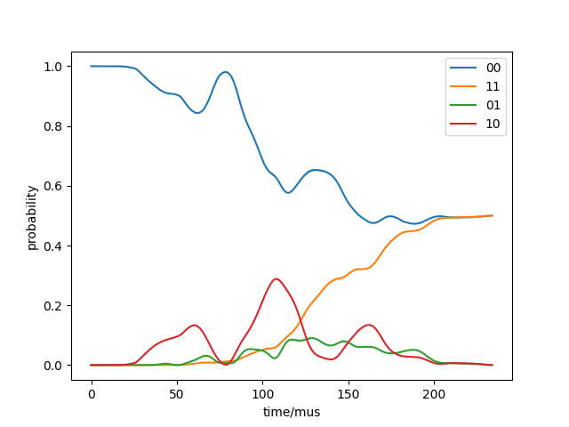

Research Interest
- Optimal Control of Superconducting Qubits (Optimal Quantum Gates)
- Implementations of Fault-tolerent Computation on Superconducting Qubits (Surface Code)
- Applications of Noisy Intermidiate-scale Quantum Algorithms on Superconducting Qubits (QA, VQE, QAOA, etc.)
而世之奇伟、瑰怪，非常之观，常在于险远，而人之所罕至焉，故非有志者不能至也。 ——(宋)王安石
The wonderful, strange and extraordinary landscapes of the world are often found
in places that are remote and seldom visited.
So people without motivations can not see them.
Education
-
M.S.c in Quantum Science & Technology, Technical University of Munich (currently)
-
B.S.c in Physics, University of Science and Technology of China, 2022
(Supervisor: Prof.Yiheng Lin)
Master's Degree (2022.10-now)
Since 2022.10, I have been enrolled in QST program...
|
|
Bachelor's Degree (2018.9-2022.6)
At 2018, I was admitted to University of Science and Technology of China,
School of the Gifted Young, the "\(00\) class".
After that, I choosed to study in Physics, especially in Atomic and Molecular Physics.
Except for basic Mathematical Analysis,
Theoretical Mechanics, Electrodynamics, Quantum Mechanics and Statistical Physics,
I've taken advanced courses such as Introduction to Atomic and Molecular Physics and
Introduction to Quantum Information. Finally, I received 85.67/100 for 4-year-study with
Excellent Student Scholarships twice at 2018 and 2020.
During my bachelor, I studied and researched at Prof.Yiheng Lin's trapped ions group from 2019,
involving both theoratical simulations and technical assignments. As for simulations, I implemented
Qutip on a lot of areas, including many-body systems as discrete time crystals
, and geometric phase gates on trapped ions (Gate pulse shaping method for Mølmer-Sørensen gate).
Besides, I've accumulated sufficient experiences in lab skills, including optics, control theory,
mechanical designing and electronic designing & engineering in particular. I've designed and packaged
a signal-processing circuit to visualize positions of light by myself. When internship,
I also designed a circuit for external protection of atom chips.
As for bachelor's thesis, it's mainly about
Contexual Subspace Variational Quantum Eigensolvers (Cs-VQE) algorithm on trapped ions towards
estimation of ground state of water molecule. At 2022, I successfully graduated from USTC.
|

|
Research
Contexual Subspace VQE on Water Molecula (Bachelor's Thesis)
Variational Quanutm Eigensolvers (VQE) algorithm is one of the algorithms applied on the
noisy-intermediate scale quantum processors. It includes quantum
processing units to prepare ansatz states to be mearsured, and classical processing
units to implement classical algorithms to optimize parameters when preparing ansatz states.
A typical VQE algorithm is to solve the ground state of a certain molecule in quantum chemistry.
The Hamiltonian of the system can be decomposed to sum of tensor products of local Pauli operators.
\[ \hat{H} = \hat{H}_1 + \hat{H}_2 + \cdots + \hat{H}_N\]
VQE is to prepare a universal state in the given Hilbert space by some universal parameters
\(\vec{\theta}=(\theta_1, \theta_2, ..., \theta_k)\)
and repeat to get each of the expectation values \(\langle \hat{H}_i\rangle \), then sum them up to get
\(\langle \hat{H} (\vec{\theta})\rangle\). Now the problem is transformed to a classical optimization
problem, which can be solved efficiently via classical algorithms or algorithms from machine learning.
But beyond the typical VQE algorithms, Contexual Subspace Variational Quantum Eigensolver is from
the idea that one can solve this problem efficiently in classical methods when the hamiltonian is
noncontextual. For tensor products of Pauli operators in noncontexual Hamiltonian, it can be expressed as
product of some basic terms, where the terms are in the set \(Z \cup C_1 \cup C_2 \cup \cdots\cup C_k\).
Here terms in Z commute with any terms in this set, while the terms in any of C set commute with terms
in the same C set but anticommute with terms in other C sets. Due to the structure of noncontexual Hamiltonian,
one can find the least terms in the set with corresponding quantum numbers of the system, and then to classically
find the ground energy of the system by optimizing quantum numbers.
However, contexual problem is not as easy as noncontexual Hamiltonian to be solved just with classical resource,
so we need quantum computing resource to take the contexuality into account. Thus, we separate the whole system
into noncontextual part and contexual part.
\[ \hat{H} = \hat{H}_c + \hat{H}_{nc} \]
For noncontexual part, one can construct corresponding quantum number to simulate it classically. Actually, the number
of terms to be simulated classicaly in determines the dimensions of noncontexual subspace of the given problem. (One
can reconsider this claim by transforming these terms into \(\hat{\sigma}_z\) or equivalently stabilizer space.)
When we reduce the number of terms in noncontextual part, contexual space can be released and be computed by typical
variational quantum eigensolver algorthms, without any contradictions to results in unrealised contextual part.
That is what we called Contextual Subspace Variational Quantum Eigensolvers Algorithm, leading to reduction
of numbers of qubis and costs of quantum computing resources.
In my Bachelor's thesis, I've clarrified Cs-VQE algorithm and performed it onto solving the ground state of water
molecule, where I designed a typical circuits by means of single-qubit and two-qubits gates of trapped ions.
At last, I simulated my design for 7 qubits in Qiskit with 0.4 H.a. error.
|

Typical Varitional Quantum Eigensolvers Algorithm

Structure of Noncontextual Hamiltonian

Reduction of \(H_2O\) Problem by Cs-VQE
|
Gate Pulse Shaping Technique for Mølmer-Sørensen Gate
When comparing to Cirac-Zoller gate, Mølmer-Sørensen gate is more insensitive to the vibrational state
of the system and robust against changes in the vibrational number during gate operation. Mølmer-Sørensen gate
is also one of the most widely used geometric phase gate on trapped ions.
Considering a chain of N trapped ions interacting a pair of bichromatic light (detuning \(\pm(\omega_k +\mu\)),
phase \(\phi_r + \phi_b = \pi\)), the bichromatic Hamiltonian is
\[
H_{MS}=\sum_i\sum_{k=1}^N\Omega_i\eta_{i,k}\cos(\mu t - \phi_i^m)(\hat{a}_k e^{-i\omega_k t}+\hat{a}_k^\dagger e^{i\omega_k t})
\hat{\sigma}_{x}^i
\]
By means of Magnus formula, we can obtain the time evolution operator under Hamiltonian
\[
\begin{aligned}
\hat{U}(\tau)
&= \exp [- i \int_0^\tau dt \hat{H}_{MS}(t) - \frac{1}{2} \int_0^\tau dt_2 \int_0^{t_2} dt_1 [\hat{H}_{MS}(t_2), \hat{H}_{MS}(t_1)]] \\
&=\exp[\sum_i\sum_{k=1}^N(\alpha_{i,k}(\tau)\hat{a}_k^\dagger+\alpha_{i,k}^*(\tau)\hat{a}_k)\hat{\sigma}_x^i+i\sum_{i,j}\chi_{i,j}(\tau)\hat{\sigma}_x^i\hat{\sigma}_x^j]
\end{aligned}
\]
Here the single spin operators part indicates a time-dependent displacement operator acts on phonon parts with eigenvalue \(\alpha_i^k(\tau)\)
, including all of the vibration modes of the ion chain. The double spin operators term indicates the accumulation of a geometric phase \(\chi_{i,j}(\tau)\)
between two typical trapped ions. This spin-spin interaction term could be used to implement C-NOT gate in trapped ions.
However, with the growing number of trapped ions, frequencies of different vibrational modes will get closer, leading to residual excitation
to other vibrational modes, which is a barrier for improving fidelity of the gate. Here the gate pulse shaping technique is introduced to
design the shpae of the laser pule to optimally control the evolution of vibrational modes as dynamical decoupling.
\[
\begin{equation}
\Omega_i(t) = \Omega(t) = \left\{
\begin{aligned}
& \Omega_1 \quad 0 < t \leq \tau / P \\
& \Omega_2 \quad \tau / P < t \leq 2\tau / P \\
& \cdots \\
& \Omega_P \quad (P - 1)\tau / P < t \leq \tau \\
\end{aligned}
\right.
\end{equation}
\]
After that, one can rewrite the accumulating phase \(\chi_{i,j}(\tau)\) and fidelity of the gate \(\mathcal{F}\) into matrix form
by considering the rabi frequency as a vector \(\symbf{\Omega}\). Then problem is transformed to an classical optimization
\[
\left \{
\begin{aligned}
&\chi_{ij}(\tau) = \symbf{\Omega}^T D^{ij} \symbf{\Omega} \neq 0 \\
&\min_{\symbf{\Omega}} (1 - \mathcal{F}) = \symbf{\Omega}^T B \symbf{\Omega}
\end{aligned}
\right .
\]
This problem is a typical constrained optimization, which can be solved effeciently with Lagrange multiplier.
In this project, I've written a program to optimize the pulse shape in different detuning domains
and simulated the evolution of quantum system with qutip, in both phonon and spin part.
|

Typical Pulse Shape for Optimized MS Gate

Evolution of Phonon Part under Optimized Pulse

Evolution of Spin Part under Optimized Pulse
|
External Protection Circuit of Atomic Chip (Summer Internship)
|
a
|
Visualization of Position of Light by Detectors
|
a
|
Publications
To be continued...
Gallery
To be added...
Useful Links
|